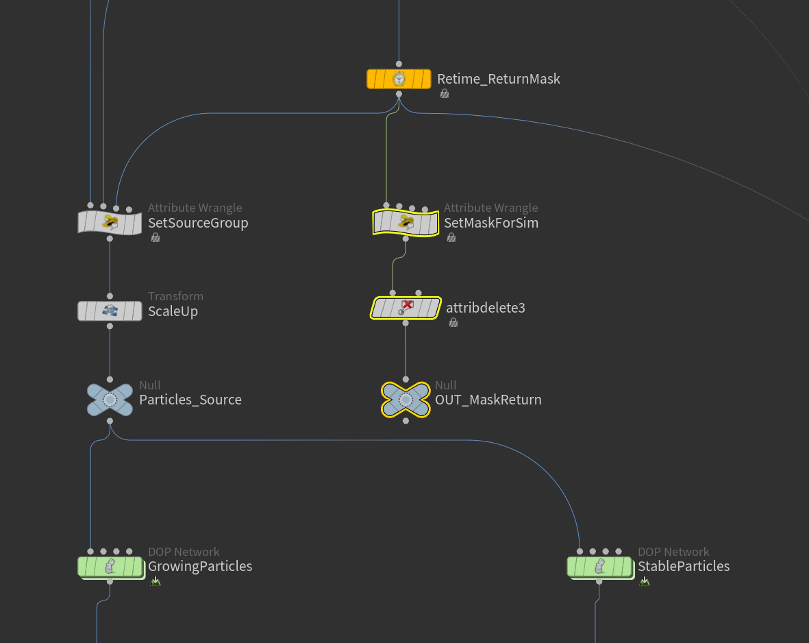
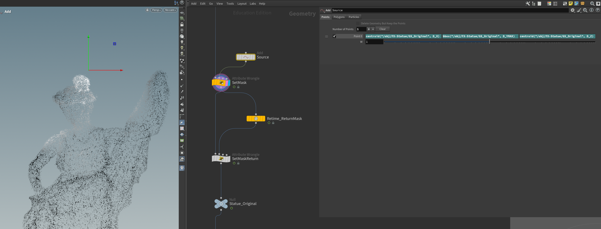
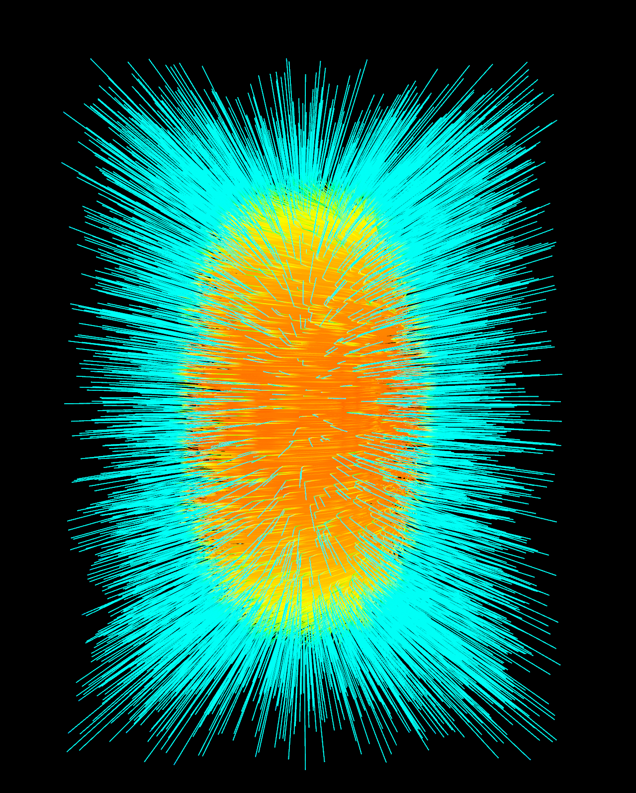

Process
Gazebo
Create an object to use as a particles emitter mask source, then assign white color to it using Color node
Apply Attribute Transfer node transfer color Attribute (@Cd) from the source to the main object (the gazebo)

Use Retime node to copy and delay the animation to create another mask that will be combine with the original one
Group points based on masks to limit the area of emission
Create multiple pyro simulations from Axiom plugin in Houdini
Velocity from pyro simulations
First layer of the effect: Animate scale (v@scale) of the Gaussian Splat based on the mask
Velocity from pyro simulations
Add particles from Gaussian Splat
Final Result
Statue

Create a point using Add node to be a starting point of a mask for particles emission
Add particles from Gaussian Splat
Create group to emit particles using the same method as the gazebo
Create pyro simulation to drive particles velocity

Velocity Field
Add particles from Gaussian Splat
Create group to emit particles using the same method as the gazebo
Create group to emit particles using the same method as the gazebo